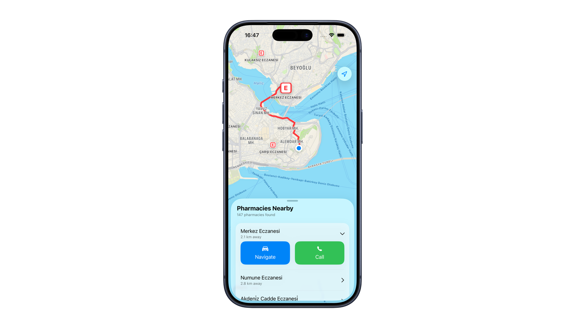
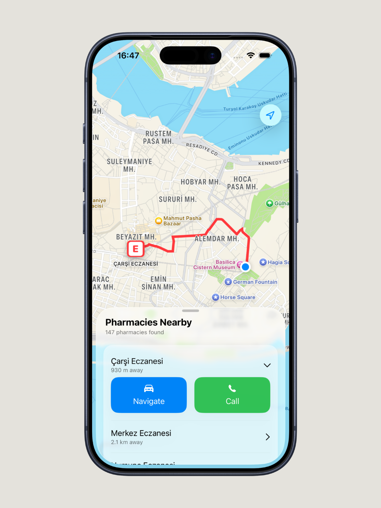

iOS apps, and the parts nobody sees.
I build complete products, not just screens. For my pharmacy app I reverse-engineered a national dataset, wrote the backend and run it on my own server. I also design and sell a 3D-printed lighting product, and I led a 200-member university club through two terms.
I'm looking for a junior iOS role — Istanbul or remote — and I can start now.
or remoteOpen to
PharmacyMap
Turkey's pharmacies take turns staying open overnight. Finding the one on duty means knowing which of 81 provincial health directorate sites to check, and most of them barely work on a phone. This puts every duty pharmacy in the country on one map.
StatusRebuilt and resubmitted · awaiting App Store review

The hard part was the data, not the app
There is no public API. The official listings are HTML behind a provincial selector — names and addresses, no coordinates. Geocoding Turkish addresses by string match puts pharmacies on the wrong street often enough to be dangerous when someone is looking for medicine at 3am.
I found that e-Devlet's own service exposes verified coordinates, and built a scraper that reconciles the two sources. It runs nightly, because duty rotations change daily and a stale list is worse than no list.
What I chose, and why
SwiftUI and MapKit, not a web view. The map is the product. Native clustering, native directions handoff, and a bottom sheet using real detents instead of a custom drag implementation I would have spent a month getting wrong.
FastAPI and SQLite on my own VPS, not a managed backend. The dataset is small and read-heavy. SQLite handles it comfortably, the whole thing costs a few dollars a month, and I learned more running it than I would have clicking through a console. It sits behind a Cloudflare tunnel, so there is no exposed origin.
It works when the backend does not. The last known duty list is cached on device with a visible staleness indicator. An app about emergencies should not have a single point of failure.

Apple rejected the first version
Guideline 5.6, and the review team was right. I had built something presenting official health data without being clear enough about where it came from. I rewrote the attribution, put source and last-updated timestamps on every listing, and rebuilt the interface around Apple Maps conventions instead of my own.
The rebuild is finished. Resubmission is currently blocked by an App Store Connect issue that is open with Apple support, so there is no public link yet — the recording below is the app running on a real device, and the source is on GitHub.
What I took from it: reading the guideline properly the first time is cheaper than a rebuild, and a rejection is feedback from people who have seen a million apps. The version I resubmitted is better than the one I thought was finished.
Some other things I've made
Different domains, same habit — start it, finish it, keep it running.
benday
A halftone screen generator that works in millimetres. Turns a photograph into two-colour vector geometry for 3D printing, laser engraving or pen plotting — six screen types, and a minimum feature size so nothing comes out smaller than your nozzle can make.
Try itSourceKorin Labs
A 3D-printed lighting brand with paying customers. I design the lamps in Fusion 360, print them, shoot them, run the shop and pack the orders. The twist-lock collar exists because threads need supports, and supports ruin a visible surface.
ShopInstagramElevator Robot
Graduation project. An autonomous robot that finds a lift call button, presses it, waits, enters and selects a floor — in buildings it has not seen before. Vision on a Raspberry Pi, motor control on an ESP32 over BLE, ROS2 between them.
Write-upSourceSelf-hosted VPN infrastructure
Private servers running VLESS with XTLS-Reality, managed through a Remnawave panel, so family in Russia and Turkmenistan can reach a filtered internet. The users cannot debug anything themselves, which is a useful constraint: it has to survive reboots, blocked endpoints and a relative on hotel wifi without me being awake.
How it worksESP32 Handheld Console
A handheld console built from parts, with three games written for it. ST7735 display, LiPo and USB-C charging, tact switches, and a printed shell designed around the board. High scores survive a power cut, which took longer to get right than any of the games.
SourceWhat I use, and where I used it
Listed against the thing it shipped in, so you can check rather than take my word for it.
iOS
- Swift PharmacyMap
- SwiftUI PharmacyMap
- MapKit PharmacyMap
- App Store Connect Shipped
Backend & infra
- Python Scrapers, API
- FastAPI · SQLite PharmacyMap
- Linux VPS Self-hosted
- Cloudflare Tunnel, Workers
Beyond
- JavaScript benday
- C++ ESP32
- ROS2 · YOLO Robot
- Fusion 360 Korin Labs
Where the rest of it comes from
Degree, languages, and the things that taught me to finish what I start.
Bahçeşehir University, Istanbul. Graduation project was the elevator robot above.
A club that introduces Istanbul to students arriving from other cities and countries. I ran it for two terms with a 15-person organising team and over 200 members — planning events, delegating to people who were not paid to listen to me, and handing it over intact.
Designing, manufacturing and selling a physical product to real customers. Pricing, photography, packaging, support — the parts of shipping that have nothing to do with code.
Localised a live mobile strategy game across three languages. Taught me how much of software quality is decided by wording nobody notices.
Comfortable working, writing and interviewing in all three.
I'm looking for a junior iOS role.
Istanbul or remote. I answer the same day, and I'm glad to walk through any of this on a call — including the parts that didn't work.